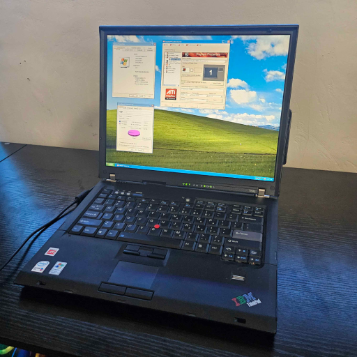
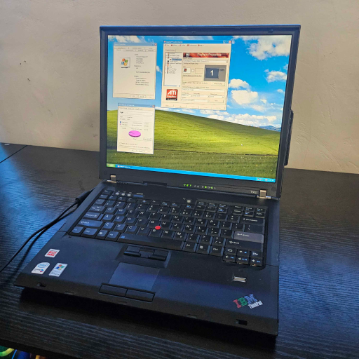

About Myself


 

Hello!
I’m Andrew Tringali, a fifth-year computer science student from Clinton, Massachusetts. I came to Clarkson as my parents are both alumni of neighboring SUNY Potsdam. I initially majored in Computer Engineering, but eventually switched to Computer Science as it aligned more with my goal to pursue a career in IT. My main interests involve repairing and tinkering computers, cars, and pretty much anything else I can take apart!
Experience-wise, I’ve been disassembling things since I was a kid. I started with fixing a broken desktop I found in my closet to play Minecraft, and worked my way up to buying and repairing broken computers to sell (and just for the fun of it). It’s what landed me a job at Clarkson’s Office of Information Technology, and eventually an IT internship at MathWorks, the creators of Matlab. Everything else- cars, appliances, etc- I picked up initially as a side effect of trying to fix my own things myself.
Once I graduate, besides finding a career so I can be financially stable, my main goal in life is to develop skills that are applicable to my hobbies: for example, learning how to weld so I can repair rust damage on cars, or board-level repair to fix components of computers. Things that I can’t do now and would be hugely beneficial if they were within my ability. I also want to make more good memories with friends- exploring the country, building cool things, and so on.